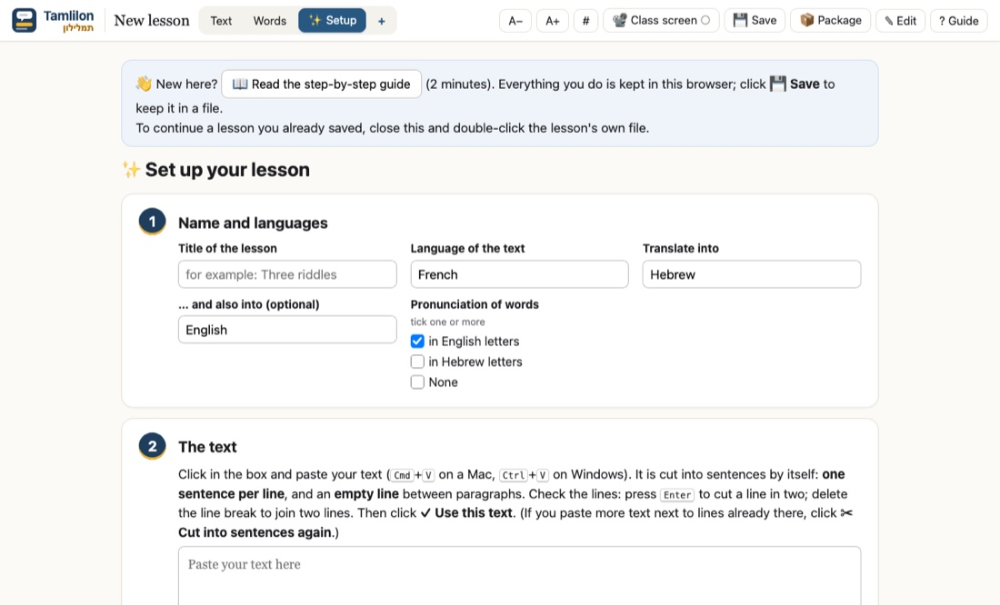
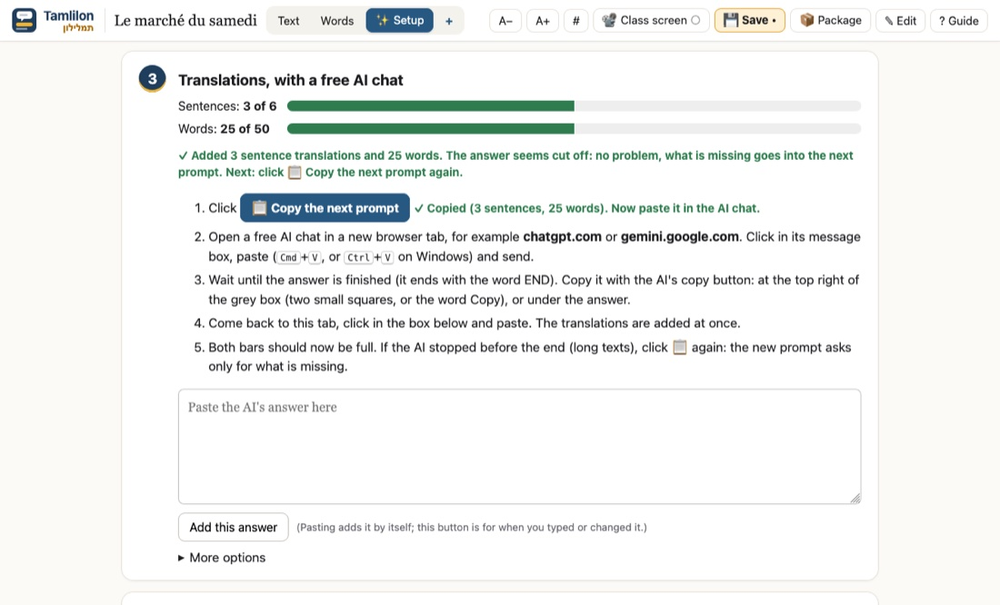
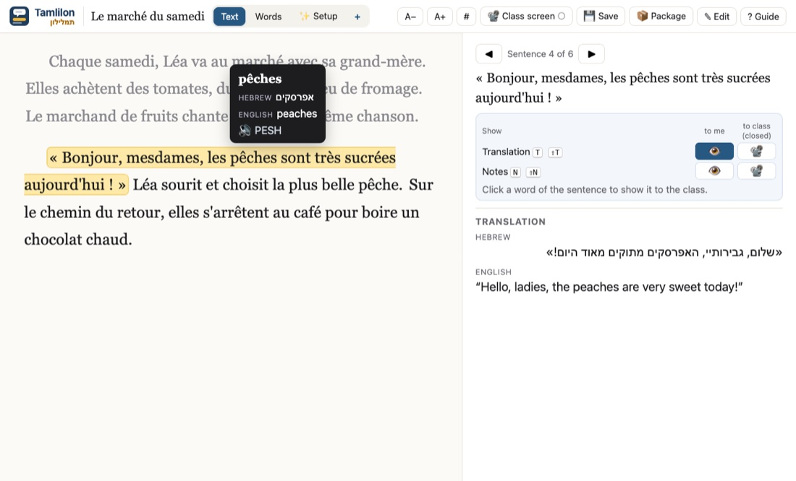

Paste a text in any foreign language. Every word gets a pop-up translation, every sentence a translation you reveal when you want, and the class can follow on a projector. Free, and nothing to install.
מדביקים טקסט בכל שפה זרה. לכל מילה יש תרגום שקופץ כשמצביעים עליה, לכל משפט יש תרגום שחושפים מתי שרוצים, והכיתה יכולה לעקוב על מקרן. בחינם, ובלי להתקין כלום.
For a computer (Windows, Mac or Linux) with Chrome, Edge, Safari or Firefox. The downloaded file works without internet: only the translation step uses a free AI chat online.
למחשב Windows, Mac או Linux, בדפדפן Chrome, Edge, Safari או Firefox. הקובץ שמורידים עובד בלי אינטרנט: רק שלב התרגום משתמש בצ׳אט בינה מלאכותית ברשת.
The tool guides you on the screen at every step.
הכלי מסביר על המסך מה לעשות בכל צעד. הכפתורים בכלי באנגלית; הטקסט והתרגומים יכולים להיות בכל שפה, גם בעברית.
Click the big blue button above to use it online.
To keep it on your computer: click Download. One file, tamlilon.html, goes to your Downloads folder (move it to your Desktop if you like). Double-click it: Tamlilon opens in your web browser, even without internet.
לוחצים על הכפתור הכחול הגדול למעלה כדי להשתמש ברשת.
כדי לשמור אותו במחשב: לוחצים על הורדה. קובץ אחד, tamlilon.html, נשמר בתיקיית ההורדות (אפשר להעביר אותו לשולחן העבודה). לחיצה כפולה עליו פותחת את תמלילון בדפדפן, גם בלי אינטרנט.
Type a title and choose the languages.
כותבים כותרת ובוחרים את השפות.

Paste your text in the big box. Click 📋 Copy the next prompt, paste it into a free AI chat (ChatGPT or Gemini) and send. Copy its answer and paste it back into Tamlilon.
מדביקים את הטקסט בתיבה הגדולה. לוחצים 📋 Copy the next prompt, מדביקים בצ׳אט בינה מלאכותית חינמי, כמו ChatGPT או Gemini, ושולחים. מעתיקים את התשובה ומדביקים אותה בחזרה בתמלילון.

Click 💾 Save: your lesson becomes one file. Double-click it any time to open it again.
לוחצים 💾 Save: השיעור נשמר כקובץ אחד. לחיצה כפולה עליו פותחת אותו שוב, מתי שרוצים.
Rest the mouse on a word to see its meaning. Move with →. For the class, click 📽️ Class screen.
מצביעים בעכבר על מילה כדי לראות מה היא אומרת. עוברים משפט עם החץ →. לכיתה: 📽️ Class screen.
